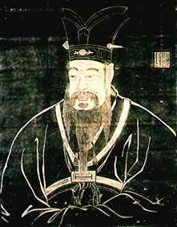

5. KONG HU-CU (551 SM - 479 SM)
Tak salah lagi, Kong
Hu-Cu seorang filosof besar Cina. Dan tak salah lagi, dialah
orang pertama pengembang sistem memadukan alam pikiran dan
kepercayaan orang Cina yang paling mendasar. Filosofinya
menyangkut moralitas orang perorang dan konsepsi suatu
pemerintahan tentang cara-cara melayani rakyat dan
memerintahnya liwat tingkah laku teladan- telah menyerap
jadi darah daging kehidupan dan kebudayaan orang Cina selama
lebih dari dua ribu tahun. Lebih dari itu, juga berpengaruh
terhadap sebahagian penduduk dunia lain.
Lahir sekitar tahun 551 SM di kota kecil Lu, kini masuk
wilayah propinsi Shantung di timur laut daratan Cina. Dalam
usia muda ditinggal mati ayah, membuatnya hidup sengsara di
samping ibunya. Waktu berangkat dewasa dia jadi pegawai
negeri kelas teri tapi sesudah selang beberapa tahun dia
memutuskan mendingan copot diri saja. Sepanjang enam belas
tahun berikutnya Kong Hu-Cu jadi guru, sedikit demi sedikit
mencari pengaruh dan pengikut anutan filosofinya. Menginjak
umur lima puluh tahun bintangnya mulai bersinar karena dia
dapat kedudukan tinggi di pemerintahan kota Lu.
Sang nasib baik rupanya tidak selamanya ramah karena
orang-orang yang dengki dengan ulah ini dan ulah itu
menyeretnya ke pengadilan sehingga bukan saja berhasil
mencopotnya dari kursi jabatan tapi juga membuatnya
meninggalkan kota. Tak kurang dari tiga belas tahun lamanya
Kong Hu-Cu berkelana ke mana kaki melangkah, jadi guru
keliling, baru pulang kerumah asal lima tahun sebelum
wafatnya tahun 479 SM.
Kong Hu-Cu kerap dianggap selaku pendiri sebuah agama;
anggapan ini tentu saja meleset. Dia jarang sekali
mengkaitkan ajarannya dengan keTuhanan, menolak perbincangan
alam akhirat, dan mengelak tegas setiap omongan yang
berhubungan dengan soal-soal metaflsika. Dia -tak lebih dan
tak kurang- seorang filosof sekuler, cuma berurusan dengan
masalah-masalah moral politik dan pribadi serta tingkah laku
akhlak.
Ada dua nilai yang teramat penting, kata Kong Hu-Cu,
yaitu "Yen" dan "Li:" "Yen" sering diterjemahkan dengan kata
"Cinta," tapi sebetulnya lebih kena diartikan
"Keramah-tamahan dalam hubungan dengan seseorang." "Li"
dilukiskan sebagai gabungan antara tingkah laku, ibadah,
adat kebiasaan, tatakrama dan sopan santun.
Pemujaan terhadap leluhur, dasar bin dasarnya kepercayaan
orang Cina bahkan sebelum lahirnya Kong Hu-Cu, lebih
diteguhkan lagi dengan titik berat kesetiaan kepada sanak
keluarga dan penghormatan terhadap orang tua. Ajaran Kong
Hu-Cu juga menggaris bawahi arti penting kemestian seorang
istri menaruh hormat dan taat kepada suami serta kemestian
serupa dari seorang warga kepada pemerintahannya. Ini agak
berbeda dengan cerita-cerita rakyat Cina yang senantiasa
menentang tiap bentuk tirani. Kong Hu-Cu yakin, adanya
negara itu tak lain untuk melayani kepentingan rakyat, bukan
terputar balik. Tak jemu-jemunya Kong Hu-Cu menekankan bahwa
penguasa mesti memerintah pertama-tama berlandaskan beri
contoh teladan yang moralis dan bukannya lewat main keras
dan kemplang. Dan salah satu hukum ajarannya sedikit mirip
dengan "Golden Rule" nya Nasrani yang berbunyi "Apa yang
kamu tidak suka orang lain berbuat terhadap dirimu, jangan
lakukan."
Pokok pandangan utama Kong Hu-Cu dasarnya teramat
konservatif. Menurut hematnya, jaman keemasan sudah lampau,
dan dia menghimbau baik penguasa maupun rakyat supaya
kembali asal, berpegang pada ukuran moral yang genah, tidak
ngelantur. Kenyataan yang ada bukanlah perkara yang mudah
dihadapi. Keinginan Kong Hu-Cu agar cara memerintah bukan
main bentak, melainkan lewat tunjukkan suri teladan yang
baik tidak begitu lancar pada awal-awal jamannya. Karena
itu, Kong Hu-Cu lebih mendekati seorang pembaharu, seorang
inovator ketimbang apa yang sesungguhnya jadi idamannya.
Kong Hu-Cu hidup di jaman dinasti Chou, masa menyuburnya
kehidupan intelektual di Cina, sedangkan penguasa saat itu
tidak menggubris sama sekali petuah-petuahnya. Baru sesudah
dia wafatlah ajaran-ajarannya menyebar luas ke seluruh pojok
Cina.
Berbetulan dengan munculnya dinasti Ch'in tahun 221 SM,
mengalami masa yang amat suram. Kaisar Shih Huang Ti, kaisar
pertama dinasti Ch'ing bertekat bulat membabat habis
penganut Kong Hu-Cu dan memenggal mata rantai yang
menghubungi masa lampau. Dikeluarkannya perintah harian
menggencet lumat ajaran-ajaran Kong Hu-Cu dan menggerakkan
baik spion maupun tukang pukul dan pengacau profesional
untuk melakukan penggeledahan besar-besaran, merampas semua
buku yang memuat ajaran Kong Hu-Cu dan dicemplungkan ke
dalam api unggun sampai hancur jadi abu. Kebejatan berencana
ini rupanya tidak juga mempan. Tatkala dinasti Ch'ing
mendekati saat ambruknya, penganut-penganut Kong Hu-Cu
bangkit kembali bara semangatnya dan mengobarkan lagi
doktrin Kong Hu-Cu. Di masa dinasti berikutnya (dinasti Han
tahun 206 SM - 220 M). Confucianisme menjadi filsafat resmi
negara Cina.
Mulai dari masa dinasti Han, kaisar-kaisar Cina setingkat
demi setingkat mengembangkan sistem seleksi bagi mereka yang
ingin jadi pegawai negeri dengan jalan menempuh ujian agar
yang jadi pegawai negeri jangan orang serampangan melainkan
punya standar kualitas baik ketrampilan maupun moralnya.
Lama-lama seleksi makin terarah dan berbobot: mencantumkan
mata ujian filosofi dasar Kong Hu-Cu. Berhubung jadi pegawal
negeri itu merupakan jenjang tangga menuju kesejahteraan
material dan keterangkatan status sosial, harap dimaklumi
apabila di antara para peminat terjadi pertarungan sengit
berebut tempat. Akibat berikutnya, ber generasi-generasi
pentolan-pentolan intelektual Cina dalam jumlah
besar-besaran menekuni sampai mata berkunang-kunang khazanah
tulisan-tulisan klasik Khong Hu-Cu. Dan, selama berabad-abad
seluruh pegawai negeri Cina terdiri dari orang-orang
pandangannya berpijak pada filosofi Kong Hu-Cu. Sistem ini
(dengan hanya sedikit selingan) berlangsung hampir selama
dua ribu tahun, mulai tahun 100 SM sampai 1900 M.
Tapi, Confucianisme bukanlah semata filsafat resmi
pemerintahan Cina, tapi juga diterima dan dihayati oleh
sebagian terbesar orang Cina, berpengaruh sampai ke
dasar-dasar kalbu mereka, menjadi pandu arah berfikir selama
jangka waktu lebih dari dua ribu tahun.
Ada beberapa sebab mengapa Confucianisme punya pengaruh
yang begitu dahsyat pada orang Cina. Pertama, kejujuran dan
kepolosan Kong Hu-Cu tak perlu diragukan lagi. Kedua, dia
seorang yang moderat dan praktis serta tak minta keliwat
banyak hal-hal yang memang tak sanggup dilaksanakan orang.
Jika Kong Hu-Cu kepingin seseorang jadi terhormat, orang itu
tidak usah bersusah payah menjadi orang suci terlebih
dahulu. Dalam hal ini, seperti dalam hal ajaran-ajarannya
yang lain, dia mencerminkan dan sekaligus menterjemahkan
watak praktis orang Cina. Segi inilah kemungkinan yang
menjadi faktor terpokok kesuksesan ajaran-ajaran Kong Hu-Cu.
Kong Hu-Cu tidaklah meminta keliwat banyak. Misalnya dia
tidak minta orang Cina menukar dasar-dasar kepercayaan
lamanya. Malah kebalikannya, Kong Hu-Cu ikut menunjang
dengan bahasa yang jelas bersih agar mereka tidak perlu
beringsut. Tampaknya, tidak ada seorang filosof mana pun di
dunia yang begitu dekat bersentuhan dalam hal
pandangan-pandangan yang mendasar dengan penduduk seperti
halnya Kong Hu-Cu.
Confucianisme yang menekankan rangkaian
kewajiban-kewajiban yang ditujukan kepada pribadi-pribadi
ketimbang menonjolkan hak-haknya -rasanya sukar dicerna dan
kurang menarik bagi ukuran dunia Barat. Sebagai filosofi
kenegaraan tampak luar biasa efektif. Diukur dari sudut
kemampuan memelihara kerukunan dan kesejahteraan dalam
negeri Cina dalam jangka waktu tak kurang dari dua ribu
tahun, jelaslah dapat disejajarkan dengan bentuk-bentuk
pemerintahan terbaik di dunia.
Gagasan filosofi Kong Hu-Cu yang berakar dari kultur
Cina, tidaklah berpengaruh banyak di luar wilayah Asia
Timur. Di Korea dan Jepang memang kentara pengaruhnya dan
ini disebabkan kedua negeri itu memang sangat dipengaruhi
oleh kultur Cina.
Saat ini Confucianisme berada dalam keadaan guram di
Cina. Masalahnya, pemerintah Komunis berusaha sekuat tenaga
agar kaitan alam pikiran penduduk dengan masa lampau
terputus samasekali. Dengan gigih dan sistematik
Confucianisme digempur habis sehingga besar kemungkinan
suatu saat yang tidak begitu jauh Confucianisme lenyap dari
bumi Cina. Tapi karena di masa lampau, akar tunggang
Confilcianisme begitu dalam menghunjam di bumi Cina, bukan
mustahil -entah seratus atau seratus lima puluh lahun yang
akan datang - beberapa filosof Cina sanggup mengawinkan dua
gagasan besar: Confucianisme dan ajaran ajaran Mao
Tse-Tung.
|